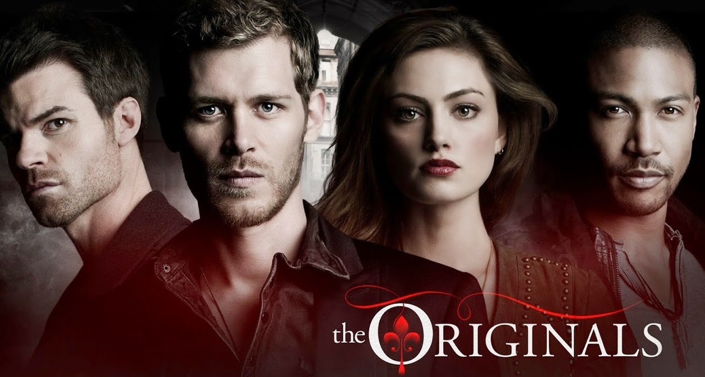

Merhabalar! Ben Aysel. Adana'da yaşıyorum ve Patika üzerinden HTML derslerine çalışmaktayım. Kodluyoruzun bu eğitim serisi sayesinde harika şeyler öğrendim ve hala de öğrenmekteyim! Siz de aramıza katılın!
It has 8.2 imdb rating and it is the most popular tv series in teenagers.
